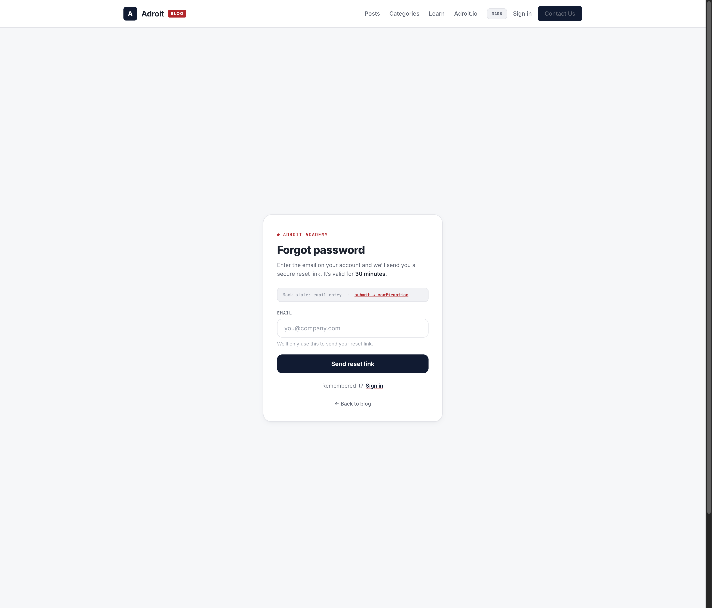
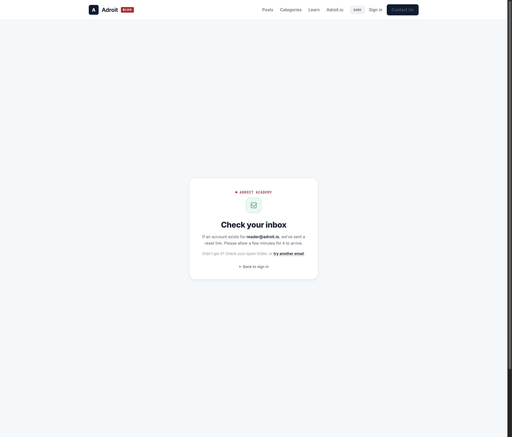
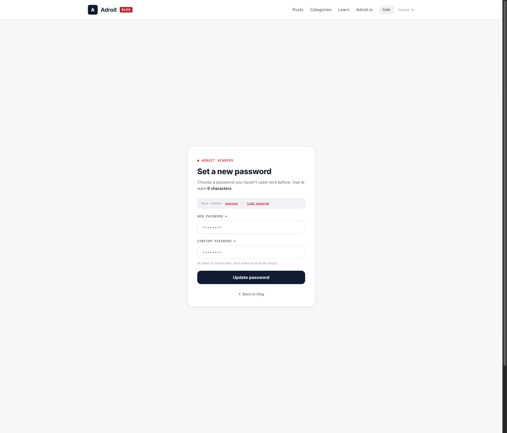
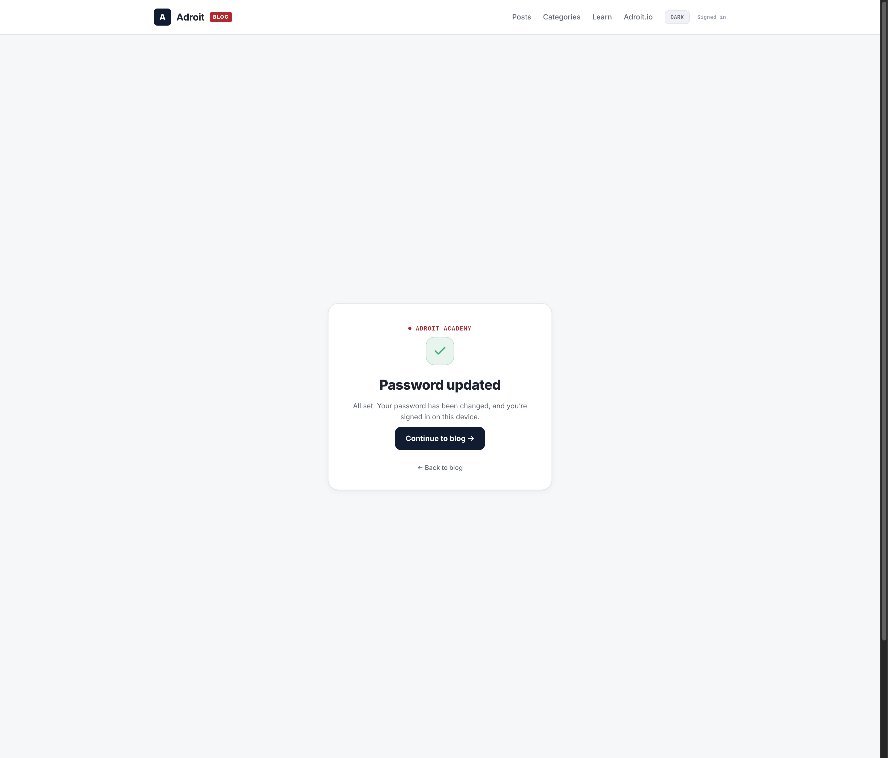
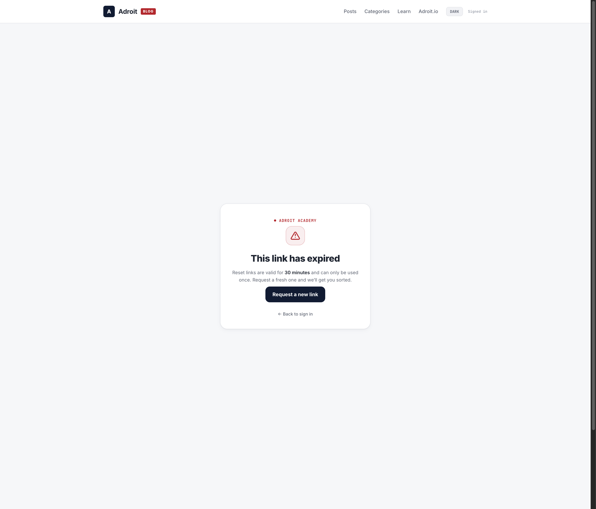
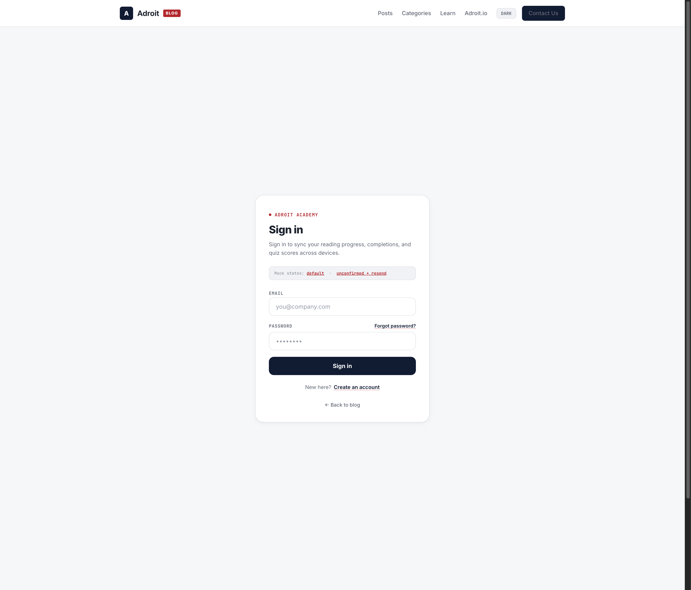
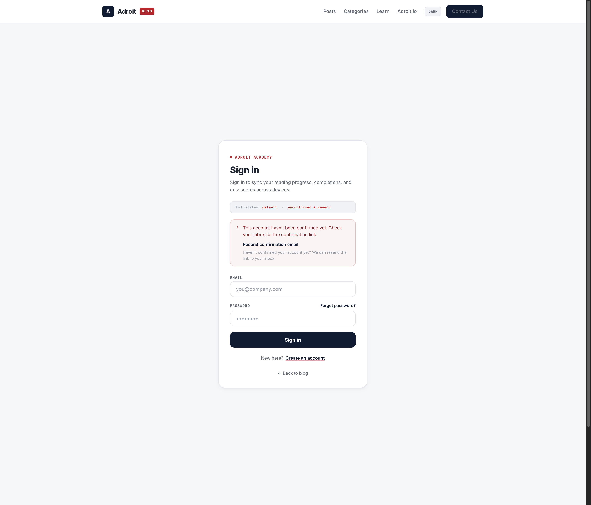

Forgot / reset password flow and the sign-in "Forgot password?" link, designed to match the existing navy/red editorial auth language on /login. All tokens reused verbatim — no global additions required. Surface: Configure (focused single-task forms).
Covers the three pages in scope from Arch t_40ff0f7b. Mockups are interactive prototypes (state toggles included). No implementation — HTML/CSS only.
| Route | States designed | Mockup |
|---|---|---|
/forgot-password | email entry · generic confirmation | mockup-forgot-password.html |
/reset-password | new password · success · link expired/invalid | mockup-reset-password.html |
/login (signin) | forgot link · unconfirmed-email + resend | mockup-login-forgot-link.html |
These pages draw entirely from the shipped globals.css auth tokens. The only ADDITIVE tokens are two micro-values for the focus ring and the expired warn signal, defined in design-tokens-password-reset.css.
Headings, primary button, focus border.
Kicker dot, focus ring, brand tag, link underline.
Page background.
Success / confirmation states.
Link-expired warn signal (new usage).
Card + input borders.
Desktop captures. Each mockup is fully responsive (single-column card on mobile) with a dark-mode toggle and inline state toggles.


aria-live="polite".


/forgot-password. Rendered as role="alert".

role="alert").The "AuthCard" recipe is shared verbatim with /login so all four pages read as one family.
| Component | Spec | a11y |
|---|---|---|
| Card | surface bg, 1px gray-200 border, radius 20px, shadow-card, p-8, max-width 420px centered | — |
| Kicker | mono 11px semibold red uppercase tracking .08em + 6px red dot · "Adroit Academy" | — |
| H1 | 1.6rem extrabold navy tracking -0.02em | h1 landmark |
| Field label | mono 10.5px bold gray-500 uppercase tracking .07em | label[for] |
| Input | h-44 radius 12px 1px gray-200 border; focus border-navy + ring red/30 | focus visible, min 44px target |
| Primary btn | h-44 radius 12px navy, white 700, hover navy-light, active scale .98, disabled 50% | focus ring, keyboard reachable |
| Forgot link | right-aligned on Password label row; navy semibold, underline red/40 → hover red (signin mode ONLY) | real link (not button) |
| Error status | red/5 bg, red/25 border, radius 12px, red-dark text | role="alert" |
| Info status | emerald-light bg, emerald/25 border, emerald-700 text | role="status" / aria-live |
| Warn status | amber-light bg, amber border, amber-700 text (expired state) | role="alert" |
| Resend action | ghost text button under the unconfirmed error, navy underline | keyboard reachable |
| Page | State | Signal | Copy |
|---|---|---|---|
| /forgot-password | default | form | "Forgot password" · "Send reset link" |
| /forgot-password | submitted | confirmation | "Check your inbox" · generic, non-enumerating |
| /reset-password | default | form | "Set a new password" · new + confirm, min 6 |
| /reset-password | success | success | "Password updated" · "Continue to blog" |
| /reset-password | expired / invalid | warn | "This link has expired" · "Request a new link" |
| /login | signin | link | "Forgot password?" → /forgot-password |
| /login | unconfirmed | error+resend | "Resend confirmation email" |
Also covered: loading (button → "Working…" disabled), inline field errors (min-length, mismatch), guest redirect on /reset-password (→ /login?next=/reset-password).
LoginForm card / input / button / status styling — the AuthCard recipe above is what's already on /login. Lift the exact Tailwind classes from src/app/login/page.tsx.<label> row as a real <Link href="/forgot-password"> (ADR-PWR-2: no ?next=).aria-live="polite" on the wrapper. Generic copy regardless of account existence (enumeration-safe).error query param. expired|invalid → warn state ("Request a new link" → /forgot-password), role="alert". Else auth-gated new+confirm form (min 6, inline mismatch), success state → router.push("/blog").role="alert" + "Resend confirmation email" button → POST /api/auth/resend-confirmation.buildMetadata → noindex. Remove the inline "Mock state" demo bars before shipping.role="alert", success/info → role="status" / aria-live. Focus moves to the heading or first field on state change.